Repositories (or repos for short) are the stored virtual versions of your projects once you upload them to GitHub. Any repository that you have uploaded to GitHub automatically begins tracking changes and becomes accessible from anywhere that you have an internet connection.
Repositories don’t necessarily need to contain code (although they often do). Design documents and other planning resources can also be managed using GitHub. These can also be uploaded alongside source code if desired.
Now you have access to the GitHub desktop application, we can begin to create repos that we can manage using GitHub. Your main desktop screen should look like the image shown below.
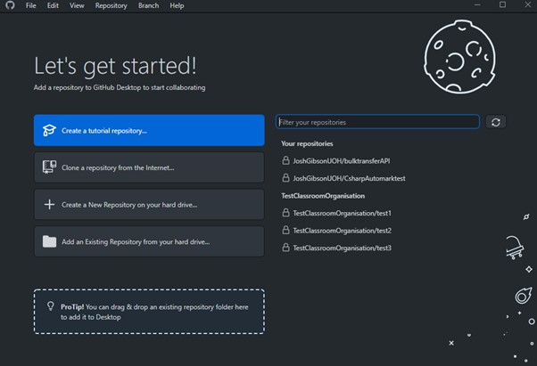We are going to start by creating a new local repository, which means it will be saved on the PC we are currently on. We do this by clicking the “Create a New Repository on your hard drive” button.
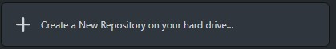When you click this button, you will be greeted with a new window that should look like the one below:
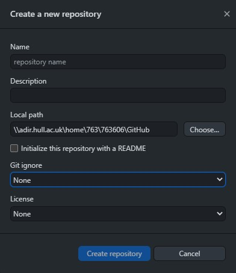Within this form do the following:
Press the “Choose” Button to the right of “local path” and navigate to your documents folder. I would strongly suggest creating a folder within your documents called “Repos” or “Repositories” to keep your repos in an easily accessible place.
Click the “Initialize this repository with a README” check box, whilst this isn’t vital at this point it is good practice for the future.
For now, leave both “Git ignore and License” on their default “None” setting.
When you have completed all the above your Create a new repository box should look the same as the one below (although your local path should be different!)
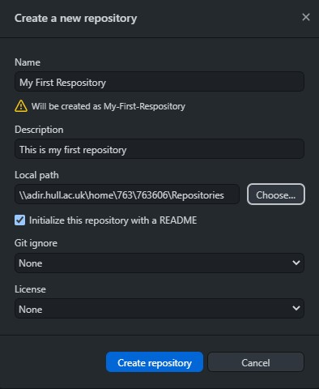If you are happy with your inputs press the “Create repository” button to create your repository locally.
After clicking this button, you will realize that the GitHub desktop window has changed and has brought you inside of your repository. Like the screenshot below.
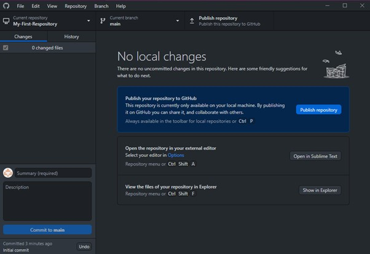There’s a lot going on here, and we will cover all of it eventually, but for now we are going to focus on things specific to uploading our repository for the first time.
In the top left-hand corner, there is a section called “Current repository”
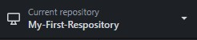In the middle of the screen, you can see we have various options, the one we are going to focus on first is the “View the files of your repository in explorer” option.
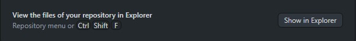This will allow us to view the repo that we have just created on our machine. You can use the shortcut provided by GitHub in future if you wish but for the purpose of this demonstration press the “Show in Explorer” button.
This will open the repo that you have just created in file explorer. Which should only have two files in it.
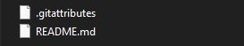Only basic for now, but over times repos can get very complicated! Checking the file structure of a repo before uploading it is a good way of checking to make sure that everything looks correct, and that you aren’t missing any important files or folders.
Now we have created our new repo, and checked its contents, we need to push it to GitHub so it can be accessed online, to do this click the “Publish repository” ( ) button that is visible on the top right-hand side of the screen.
Pressing this button will bring up another dialog box, that allows you to confirm the settings you entered previously. And set the privacy and organization that your repo is going to belong to (if any)
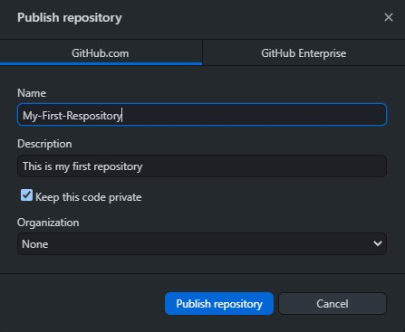For now, leave all the settings set by GitHub desktop as default, and press the blue “Publish repository” button at the bottom of the window.
GitHub desktop will load for a few seconds, and load back into the repository overview window, although this time a new option will be added “Open the repository page on GitHub in your browser”
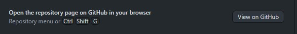Use the shortcut to open your repo in the browser, or alternatively press the “View on GitHub” button.
Your PC should open a browser window and you should be able to see the repo you just created visible on the GitHub website, like the image below:
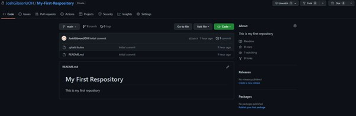If this worked, well done! You have just created your first GitHub repo using GitHub desktop.